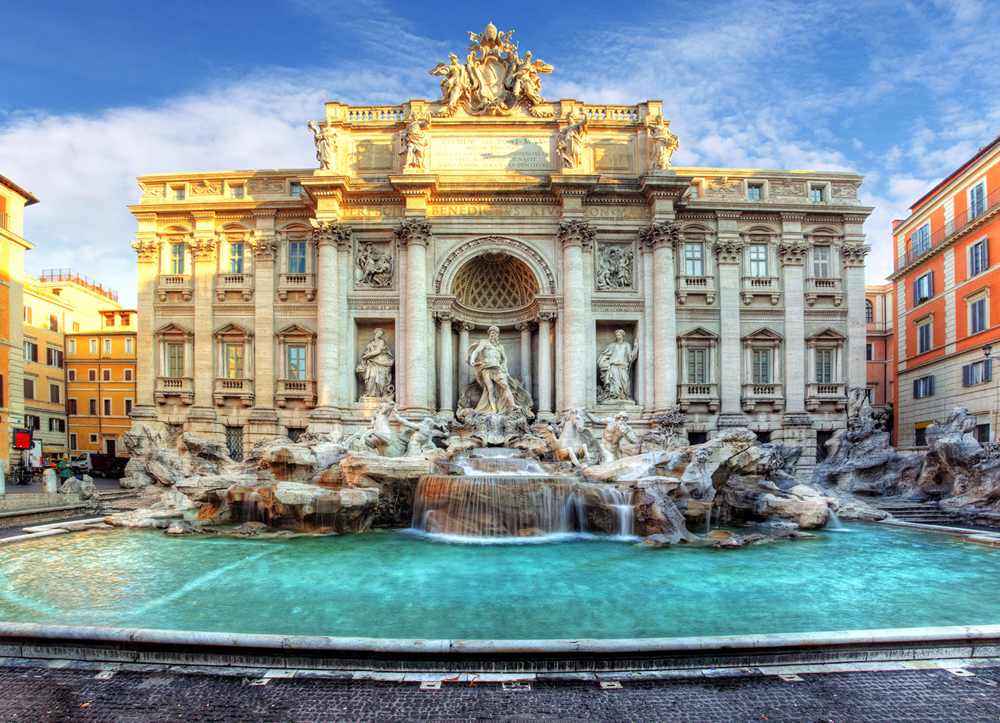

У Італії налічується близько 60% культурних цінностей Європи. У цій маленькій країні практично кожне місто являє собою справжній музей історії просто неба. Крім незліченних пам'яток культури та руїн цивілізації Стародавнього Риму,
країна славиться прекрасними природними умовами - білими схилами альпійських гір, мальовничими пляжами адріатичного та середземноморського узбережжя, покритими оливковими садами та виноградниками Апеннін та чарівними озерами півночі.
Але Північна Італія часто не береться до уваги, тому що є так багато інших місць для відвідування. Проте цей регіон може ще похвалитися своїми музеями, виробництвом спортивних автомобілів, кухнею, дизайном та архітектурою.
Венеція
Багато хто називає Венецію найромантичнішим містом на Землі, і це справді так. Емоційна атмосфера тут дивовижна та чарівна... На вулицях панують тиша та спокій, які порушують лише крики самотніх чайок, шурхіт хвиль, бій дзвонів собору Сан-Марко та мелодійний спів гондольєрів.
Особливої уваги заслуговує відвідування площі Святого Марка (Piazza San Marco), з розташованим на ній однойменним собором. На площі туристів зустрічають численні голуби, яких за легендою привезли з Єгипту спеціально подарунок дружині дожа.
Тут возвеличується кампаніла (дзвіниця) – найвища споруда Венеції, звідки відкривається чудовий краєвид.
У гирлі Великого каналу розташована одна з найяскравіших пам'яток – Санта-Марія-делла Салюте (Basilica di Santa Maria della Salute). Це церква, яку вінчають башти у стилі відродження.
Вона була побудована в 1631 на честь порятунку Дівою Марією Венеції від чуми. Слово "салюте" означає одночасно здоров'я та порятунок.
Флоренція
Флоренція незрівнянна у питанні прекрасних видів та історичних пам'яток. Місто, засноване в I столітті до н. е., просто насичене величними соборами,
шикарними віллами та палаццо, зеленими садами та іншими дивовижними місцями.
Piazza della Signoria – Головна площа Флоренції, тут є на що подивитися. Тут троє великих скульпторів залишили свої витвори.
Мікеланджело створив Давида (того самого, що переміг Голіафа) як символ того, що маленьку республіку Флоренцію не змогли підкорити ні Папа, ні король французький.
Санта-Марія-дель-Фьоре. Кафедральний собор і перлина Флоренції, головна визначна пам'ятка Флоренції в очах мільйонів туристів, він мав уміщати 90 000 чоловік, все населення міста.
Палац Медічі-Ріккарді (Palazzo Medici Riccardi) XV століття – це своєрідна демонстрація сили та достатку роду Медічі. Розташований у центрі Флоренції особняк був спроектований улюбленим архітектором сім'ї Мікелоццо.
Рим
Рим - це справжній музей просто неба, оглянути який повністю не вдалося ще жодному туристу на землі. Рим славиться пам'ятками античної епохи і натовпами туристів, які бажають на ці пам'ятники подивитися.
РИМСЬКИЙ ФОРУМ.
В античні часи форум був громадським та політичним центром Риму. Залишки форуму перебувають на Священній дорозі (Via Sacra).
ПАНТЕОН
Храм усіх богів, що знаходиться на площі П'яцца-делла-Ротонда, був побудований у II столітті, а у VII став католицькою церквою. Пантеон - антична будівля в Римі, що найкраще збереглася.
Відомий римський Колізей був побудований імператором Тітом Флавієм Веспасіаном у 72 році. Амфітеатр містив приблизно 55 тисяч глядачів. Тут проводилися бої гладіаторів та диких звірів.
Найчастіше вони були безкоштовними, а організаторами видовищ часто виступали римські імператори.

Фонтан Треві – найвідоміший фонтан у Римі. Вода у фонтан надходить через акведук, збудований імператором Агріппою.
Якщо вірити місцевій легенді, кожен, хто ковтне води з цього фонтану, неодмінно повернеться до Риму. Для здоров'я безпечніше по-старому кинути у фонтан монету.
Тоскана
Коли мова заходить про Тоскану, то перша асоціація найчастіше пов'язана з Флоренцією.
Подорож містами однієї тільки Тоскани здатна подарувати не менше емоцій, ніж Римом, Міланом і Венецією разом узятим. Головне – знати, куди їхати.
Піза, що розташувалася на Тірренському узбережжі, відома, насамперед, біломармуровим архітектурним ансамблем Площі чудес, до якого входить знаменита башта, що падає, а також баптистерій і Собор Санта Марія Маджоре.
Сієна, оточена оливковими гаями та виноградниками, розташувалася в долині Кьянті, відомої як головний центр виноробства Тоскани.
Завдяки потужним фортечним стінам, Сієна набагато краще, ніж інші міста Італії, змогла зберегти свій середньовічний вигляд.
Ватикан
Ватикан є найменшою державою в Європі та знаходиться на території Риму. Назва міста-держави походить від назви пагорба, на якому воно розташоване.
Найголовніша пам'ятка тут – собор Святого Петра та резиденція папи римського. У музеях Ватикану зберігається безцінна колекція творів мистецтва, а в Сикстинській капелі можна побачити знаменитий цикл фресок Мікеланджело.
Сикстинська капела у Ватикані — одна з найвідоміших та найпопулярніших серед туристів усього світу пам'ятка культури та історії.
Зовні будівля, поклавши руку на серце, виглядає досить скромно, проте, опинившись усередині приміщення, можна втратити дар мови від краси, що оточує тебе.
Неаполь
Неаполь – найбільше місто Південної Італії, яке прославилося як батьківщина піци, гітари та чудових костюмованих маскарадів.
Знайомство з містом зазвичай починають з його історичного центру – площі Пьяцца-дель-Плебішито із величним Королівським палацом та церквою Сан-Франческо-ді-Паола.
Головна природна пам'ятка Неаполя – Везувій – один із найнебезпечніших вулканів світу, на схилах якого варто відвідати руїни стародавніх Помпей та Геркуланума.
Артефакти, знайдені під час археологічних розкопок на Везувію, зберігаються у Національному археологічному музеї Неаполя, відвідування якого буде цікавим навіть тим, хто відносно байдужий до історії.